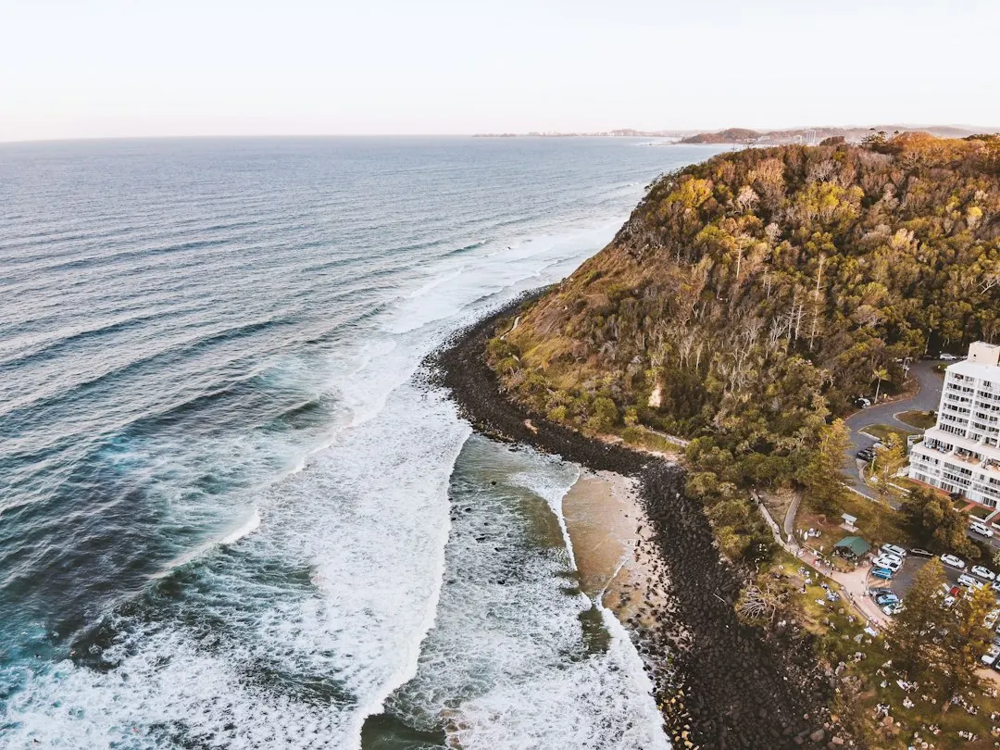

For homeowners comparing concrete sleeper retaining walls gold coast options, the useful decision points are wall height, soil pressure, drainage, access, approvals and the detail included in each quote.
Concrete Sleeper Retaining Walls Gold Coast Explained
The description from Concrete Sleeper Retaining Walls Gold Coast presents concrete sleepers as a low-maintenance option for sloping blocks, boundary areas and replacement of tired timber walls. Precast sleepers slot between hot-dip galvanised steel posts concreted into the ground.
Before requesting prices, note the approximate wall length and height, what the wall will retain, whether an old wall needs removal and how machinery can reach the area. A driveway, house, pool or other load above the retained soil can affect the design. Soil, drainage and the proposed outlet also need to be considered.
- Measure the wall line and identify its highest section.
- Record fences, structures, gardens, driveways and narrow access points.
- Ask whether excavation, footings, posts, sleepers, drainage, removal and reinstatement are included.
Choose a system and finish that suits the job
Concrete sleepers are one replacement option when a treated pine wall is leaning or beginning to rot. The guide says treated pine sleeper walls typically last around 15 to 25 years, depending on drainage and soil, while concrete sleepers do not rot.
Described sleeper sizes are typically 200 mm high and at least 75 mm thick, with lengths of 1.6 m, 2.0 m and 2.4 m. Finishes include charcoal, timber-look and sandstone. Plain grey sleepers can be painted with exterior masonry paint. Confirm the proposed size, finish and post spacing rather than comparing only the wall length.
A boundary wall may sit below a Colorbond fence as a plinth or carry fencing above it. Clarify who supplies and installs the fence, how the boundary is treated and whether drainage remains accessible.
Put drainage and approvals into the scope
The described drainage arrangement uses a slotted agricultural pipe at the base, clean gravel and geotextile fabric behind the sleepers, with a fall to an approved outlet. Ask where the outlet will discharge and whether pipework, gravel, fabric and reinstatement are included.
Taller walls and walls carrying extra load above them may need building approval and an engineer's design. Where approval is required, a building certifier issues it before work begins. Ask who prepares the documents, arranges certification and accounts for boundary conditions and neighbouring property.
The guide states that retaining walls are regulated building work in Queensland. It also says building work valued over $3,300, including most retaining walls, must be completed by a QBCC-licensed contractor, typically under a structural landscaping or builder licence class. Check the contractor's licence details and written scope before accepting a quote.
Read each price as a complete scope
The 2026 figures are indicative guides, not a quote. Gold Coast guidance gives roughly $295 to $590 per lineal metre installed for a one metre high wall, with $440 described as typical. Australian guides give around $250 to $650 or more per square metre of wall face for supplied and installed work, with higher figures possible for tall engineered walls.
Request separate line items for timber removal, excavation, spoil removal, steel posts, concrete, sleepers, drainage, engineering, certification, difficult access and fencing. Engineering design and certification are described as roughly $500 to $2,000 per job where needed, depending on the wall.
The enquiry described by the business has no cost and no obligation to proceed. That does not make construction free. The written quotation, inclusions, exclusions, warranty terms and approval responsibilities should control the decision.
Who this guide applies to
This guide suits Gold Coast property owners considering a new wall, replacement of treated timber, a boundary wall, a fence plinth or a taller engineered structure. It is most useful when a sloping block, drainage concern, limited access or load above the wall makes a simple per-metre comparison unreliable.
Before work starts, ask the installer to explain the wall height, footing method, drainage outlet, approval position, licence details, construction sequence and responsibility for underground services. The described process recommends a Before You Dig Australia enquiry before post holes are installed to check for underground pipes and cables.
- Describe the site. Provide the suburb, approximate length and height, retained feature, old-wall condition and access constraints.
- Check the design. Ask about soil, drainage, loads above the wall, engineering, certification, boundary conditions and the proposed outlet.
- Compare written scopes. Review inclusions for demolition, excavation, posts, sleepers, drainage, approvals, fencing, reinstatement and warranty.
| Choice | Useful when | Questions to ask |
|---|---|---|
| Concrete sleepers | Replacing timber or forming a retaining wall | Which size, finish and post spacing are proposed? |
| Concrete block wall | The design calls for another wall system | How do construction, drainage and engineering compare? |
| Rock or boulder wall | The landscape suits a natural appearance | What access, footing and drainage work is included? |
This guide covers retaining wall choices, indicative costs, drainage, approvals, quoting and preparation on the Gold Coast.